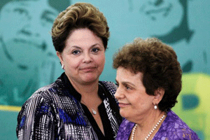

|
|
موضع نیرومند برزیل در زمینه حقوق زنان /جولیا سویگ
سه شنبه26 اردیبهشت 1391
چهار دهه پیش زنانی که امروزه رهبر برزیل هستند، در جنبشهای مخفیای فعال بودند که میخواستند رژیم نظامی برزیل را سرنگون کنند. آنان تصمیم گرفتند که بهترین راه انتقامجویی از شکنجهگرانشان که از قدرت دولتی برای در هم شکستن آنان سوء استفاده میکردند، بهره وری از دولتی دمکراتیک است...

عکسی متعلق به سال 2010 زنانی را نشان میدهد که رئیس جمهور جدید را در مراسم تحلیفاش در میان گرفتهاند؛ این عکس فصلی از مجمع زنان رأیدهنده را به تصویر میکشد. اما این حدوداً 60 زن چیزی بیش از توافق آرا را نشان میدهند. آنان تاریخچهای مشترک از رنج و بقا دارند: زنانیاند که ارتش برزیل آنان را در دهه ۱۹۷۰ در زندان تیراندنتز سائوپولو به همراه دوستان، رفقا و رئیس جمهور جدید ششمین قدرت اقتصادی جهان، دیلما روسف، حبس و شکنجه کرد.
در وسط این گروه زنی با موهای مجعد با بلوزی ارغوانی رنگ ایستاده است؛ الئونورا منیچی که در تمام عمرش از فعالین حقوق زنان و زمانی عضو حزب کمونیست برزیل بوده است، اکنون از اعضای کابینه و وزیر امور زنان رئیس جمهور میباشد. این رئیس دانشکده دانشگاه سائوپولو با اقتدار یک پروفسور صحبت میکند، کارشناس برجسته علوم سیاسی (تحقیقاش در مورد سلامت زنان بسیار مورد توجه است) و دارای آگاهی یک فعال سیاسی دنیادیده است. منیچی همواره فمینیست بوده است. او اکنون در برزیل مسئول وزارتخانهای می باشد که بنا به تعریف خودش، بالاترین اولویتاش "مشغله" خود و رئیس جمهور روسف است؛ یعنی پایان دادن به خشونت علیه زنان.
من طی دیدار اخیر منیچی از واشنگتن برای شرکت در نشست کمیسیون زنان بین قارهای آمریکا در سازمان ایالات متحده آمریکا با وی ملاقات داشتم. همان هفته کنگره ایالات متحده بر اجرای مجدد قانون مقابله با خشونت علیه زنان 1994 را اعلام کرد، قانونی که زمانی از حمایت اکثریت دو حزب برخوردار بود، اما امروزه جمهوریخواهان از حمایت از آن سر باز میزنند.
بنابراین با اندکی حسرت به سخنان تحسینآمیز وی گوش میدادم که انتخاب اولین زن رئیس جمهور در سال 2010 توسط بیش از 56 میلیون برزیلیایی را نشانه "بی همتای تاریخی" از "بلوغ دمکراسی برزیل" توصیف میکرد. و تعهد پرزیدنت روسف به برابری جنسیتی را فراتر از انتخاب 10 زن وزیر در کابینهاش میداند.
رئیس جمهور روسف، در ادامه کار پیشینیاناش، منابع سیاسی و مالی زیادی را به اجرای قانون "ماریا دا پنها" اختصاص داده است. این قانون مصوبه سال 2006، به نام داروسازی نامگذاری شده است که شوهرش هر روزه او را شکنجه میداد – با حمله با اسلحه کشنده، شوک الکتریکی، خفگی – و سرانجام نیز فلج شد. حمایتهای قانونی برزیل از قربانیان خشونت خانگی در آن زمان چنان اندک بود که تلاشهای قضایی "دا پنها" برای محاکمه شوهرش 19 سال به طول انجامید. و در نهایت، وی فقط به 2 سال زندان محکوم شد.
زمانی که دیلما روسف رئیس کارکنان پرزیدنت لوئیز ایناچیو لولا دی سیلوا و مشاور ارشد سیاست داخلی بود، مریا دا پنها شکایتی به دادگاه حقوق بشر بین قارهای تسلیم کرد و با همکاری لولا و روسف، کنگره برزیل قانونی گذراند که سازمان ملل متحد و کارشناسان حقوقی آن را نیرومندترین و جامعترین قانون علیه خشونت خانگی در جهان توصیف کردند. این قانون پایهگذار شبکهای از دادگاههای شهری، استانی و کشوری، پناهگاهها، برنامههای آموزش پلیس و تسهیلات بهداشتی برای ممانعت و مجازات خشونت علیه زنان و دختران است. یک جنبه یگانه: این قانون به شکایات ناشناس علیه متخلفان جنبه قانونی میدهد و امکان حمایت بیشتر قربانیات و محاکمه مجرم را فراهم میآورد.
اقدامات پرزیدنت دیلما و منیچی در زمینه برابری جنسیتی از توقف خشونت علیه زنان فراتر میرود. این اقدامات شامل ارائه خدمات بهداشتی به ویژه به مادران، در دوران بارداری و پس از زایمان، و تلاش برای دستیابی به تنوع جمعیتی، از نظر نژادی، قومی، طبقاتی و جنسیتی است. همچنین از موارد دیگر میتوان از حمایت از دریافت دستمزد مساوی، یا به گفته این وزیر "استقلال اقتصادی"، حمایت از دستمزد زنان شاغل در بخشهای خصوصی و دولتی، و فشار برای رسمی کردن و حمایت از کارگران خانگی نام برد.
اما در صحبت ما منیچی مرتب به اقداماتی برمیگشت که امیدوار بود در فرهنگی که خشونت علیه زنان را تحمل میکند، تغییر به وجود آورند. چهار دهه پیش زنانی که امروزه رهبر برزیل هستند، در جنبشهای مخفیای فعال بودند که میخواستند رژیم نظامی برزیل را سرنگون کنند. آنان تصمیم گرفتند که بهترین راه انتقامجویی از شکنجهگرانشان که از قدرت دولتی برای در هم شکستن آنان سوء استفاده میکردند، بهره وری از دولتی دمکراتیک است که اکنون درصدد است چارچوبهای قانونی و نهادینه برای عدالت برای تمام زنان برزیلیایی به ویژه قربانیان خشونت جنسی، فیزیکی و روانی به وجود آورد.
در این بزرگترین کشور کاتولیک جهان، که در حال حاضر قدرت سیاسی کلیسای پروتستان در حال گسترش و قدرتگیری سیاسی است، به رغم دسترسی گسترده به وسایل جلوگیری از بارداری، حق سقط جنین محدود است. اما دفعه بعد که برخی از دگماتیستهای آمریکایی سیاست خارجی به پرزیدنت روسف خرده گرفتند که اقداماتش در زمینه حقوق بشر کافی و نیرومند نیست، بهتر است نگاهی به برزیل بیاندازند که سرمشقی است برای زنان و دختران سراسر جهان.
برگرفته از سایت دیلی بیست